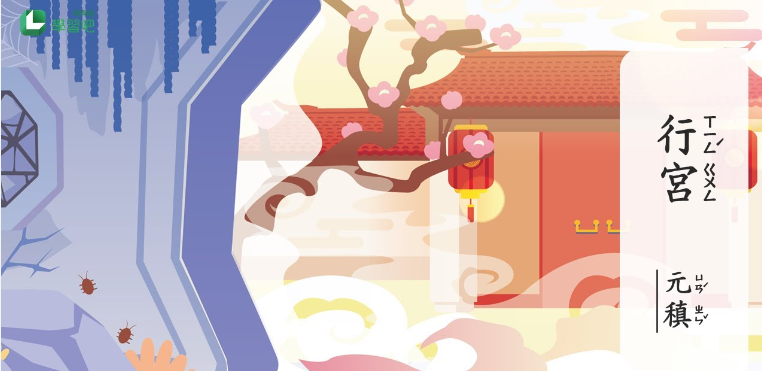

行宮
寥 落 古 行 宮，宮 花 寂 寞 紅。 白 頭 宮 女 在，閒 坐 說 玄 宗。

江雪
千山鳥飛絕，萬徑人蹤滅。 孤舟蓑笠翁，獨釣寒江雪。
寥 落 古 行 宮，宮 花 寂 寞 紅。 白 頭 宮 女 在，閒 坐 說 玄 宗。
千山鳥飛絕，萬徑人蹤滅。 孤舟蓑笠翁，獨釣寒江雪。
山中相送罷，日暮掩柴扉。 明年春草綠，王孫歸不歸？
白日依山盡，黃河入海流。 欲窮千里目，更上一層樓。
三日入廚下，洗手作羹湯。 未諳姑食性，先遣小姑嘗。

空 山 不 見 人，但 聞 人 語 響 。 返 景 入 深 林，復 照 青 苔 上 。

獨 坐 幽 篁 裡，彈 琴 復 長 嘯 。 深 林 人 不 知，明 月 來 相 照 。
床 前 明 月 光，疑 是 地 上 霜 。 舉 頭 望 明 月，低 頭 思 故 鄉 。

功 蓋 三 分 國，名 成 八 陣 圖 。 江 流 石 不 轉，遺 恨 失 吞 吳 。

春 眠 不 覺 曉，處 處 聞 啼 鳥 。 夜 來 風 雨 聲，花 落 知 多 少 。